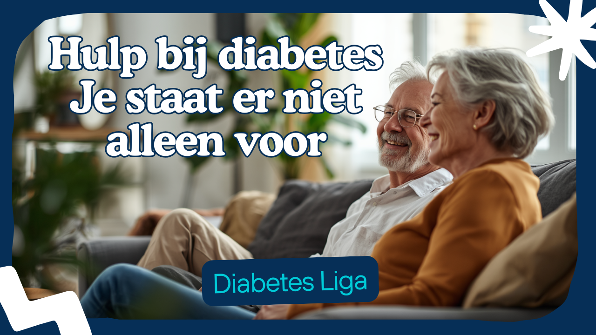

Horizontale videoclip
1:14
Een rustig en volledig overzicht
De horizontale promotievideo brengt de ondersteuning van Diabetes Liga ruim en overzichtelijk in beeld. Dit formaat is ideaal voor een website, een presentatie, een infoscherm of een groter scherm tijdens een bijeenkomst. Het is ook de beste keuze wanneer de kijker rustig het volledige verhaal wil volgen.
- Geschikt voor desktop, televisie en projectiescherm
- Mooi in webpagina's, nieuwsbrieven en presentaties
- Geeft beeld en tekst de meeste ruimte
